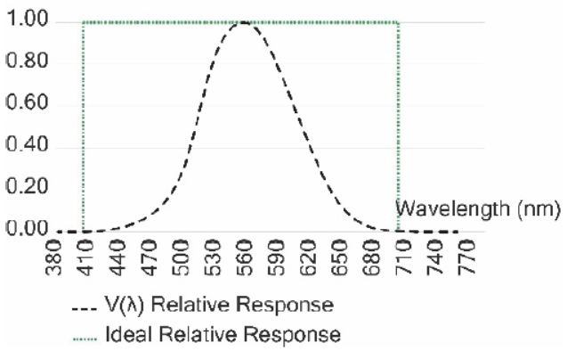
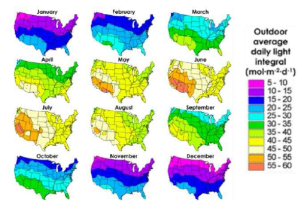
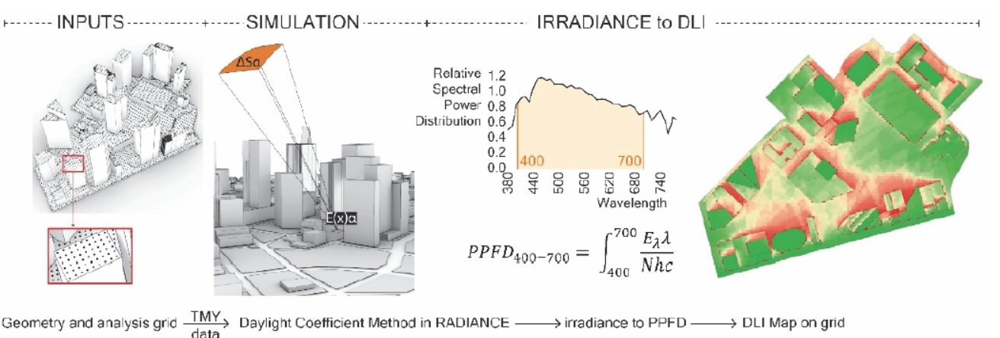
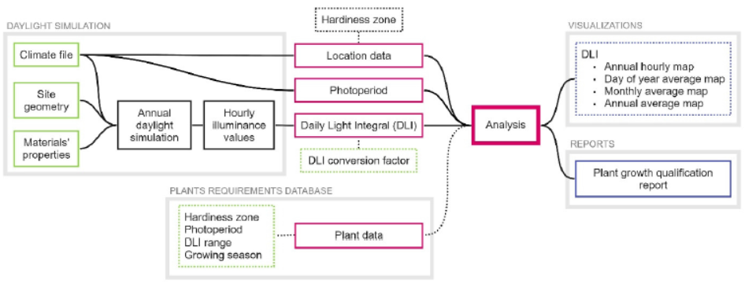
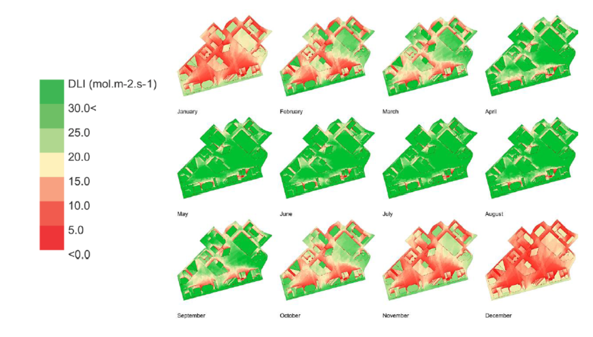
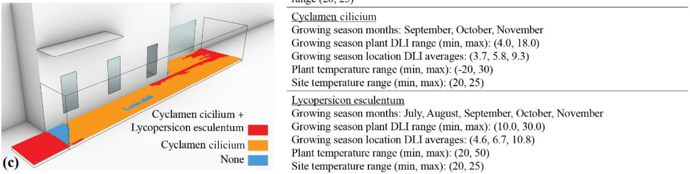
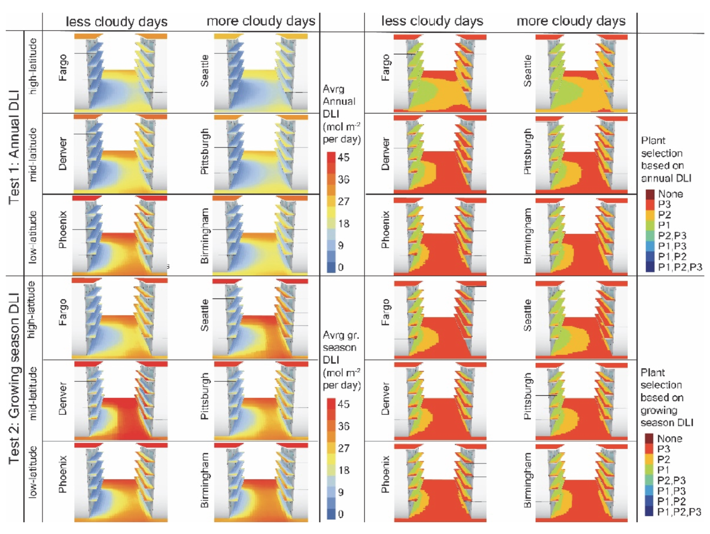

Introduction
Urban greening is a widely acknowledged strategy for improving outdoor thermal comfort, mitigating the Urban Heat Island (UHI) effect, enhancing air quality, and improving the overall quality of life in cities. Vegetation, whether in the form of trees, turfgrass, or food crops, plays a crucial role. However, the success of urban greening initiatives heavily depends on the appropriate selection and placement of plant species, considering the complex microclimatic conditions prevalent in urban environments.
A critical factor for plant growth is the availability of an adequate amount of solar radiation, specifically Photosynthetically Active Radiation (PAR). While factors like moisture and soil nutrients can often be supplemented, light availability is largely determined by the urban topology, including building heights, street canyons, and shading profiles. This research focuses on developing and refining a radiation modeling strategy to inform plant selection for urban greening by accurately estimating PAR and its derivative, the Daily Light Integral (DLI).
The Challenge in Urban Greening
Traditional approaches to plant selection often rely on empirical measurements or general guidelines that may not capture the nuanced light availability within specific urban micro-locations. Existing urban simulation tools, while incorporating vegetation, rarely provide definitive guidance on the feasibility of growing and maintaining specific plant species.
Key challenges include:
- Microclimate Variability: Solar radiation can vary significantly even within a small urban area due to complex shading patterns from buildings and other structures.
- Spectral Accuracy: Early methods for estimating PAR often relied on converting visible light (illuminance, measured in lux) to PAR. However, the human eye's sensitivity (photopic curve) differs significantly from the spectral response of photosynthesis, leading to potential inaccuracies.
- Data Integration: Effectively combining climatic data, urban geometry, material properties, and plant-specific light requirements into a coherent decision-support framework is complex.

Figure 1: The human eye's spectral sensitivity (V(λ)) peaks in green, while PAR covers a broader range crucial for photosynthesis. Approximating PAR from illuminance can be inaccurate.
Our Approach: The PhotoRad Methodology
This research proposes a simulation-based methodology to generate annual estimates of PAR in outdoor urban spaces, leading to more informed plant selection. The core of the methodology involves:
1. Foundational Concepts: PAR and DLI
Photosynthetically Active Radiation (PAR) is the portion of the solar spectrum (typically 400-700nm) that plants use for photosynthesis. It is often quantified as Photosynthetic Photon Flux Density (PPFD), measured in micromoles per second per square meter (µmol·m⁻²·s⁻¹). The Daily Light Integral (DLI) is the cumulative PPFD received over a 24-hour period (mol·m⁻²·day⁻¹), a critical metric for assessing plant growth potential.

Figure 2: Example of a macro-scale DLI map for the mainland United States (Credit: Korczynski et al., 2002, as shown in SimAUD 2020).
2. Radiation Modeling Strategy
The methodology employs advanced radiation modeling techniques, primarily using the Radiance raytracing system, to calculate incident solar radiation on user-defined analysis grids within an urban model.
- Climate Data: Typical Meteorological Year (TMY) weather files provide hourly solar radiation data (direct normal and diffuse horizontal) and other relevant climatic parameters.
- Urban Context Modeling: 3D CAD models represent the urban geometry, including buildings and terrain. Material properties (reflectivity, transmissivity) are assigned to surfaces.
- Hourly Irradiance Calculation: The Daylight Coefficient Method (or similar finite-element approaches) is used within Radiance to efficiently calculate hourly incident solar irradiance (W/m²) on analysis points, considering shading and inter-reflections.
3. Advanced PAR/PPFD Calculation
A key innovation is the move towards more spectrally accurate PAR calculations:
- Early Approach (Illuminance-based): Initial strategies involved calculating illuminance (lux) and converting it to PPFD using generalized factors. While useful, this has spectral limitations.
- Spectrally Weighted Raytracing (Direct Irradiance-based): The refined methodology calculates PPFD directly from incident solar irradiance. This involves:
- Using a standard solar spectrum (e.g., CIE D65 illuminant).
- Calculating the fraction of spectral power for each wavelength within the PAR range (400-700nm).
- Converting the irradiance at each wavelength to PPFD using fundamental physical constants (Avogadro's constant, Planck's constant, speed of light).
- Integrating these wavelength-specific PPFD values to obtain the total PPFD. This approach more accurately accounts for the energy available for photosynthesis.

Figure 3: Schematic illustrating the process of converting simulated irradiance to PPFD and subsequently to DLI maps, considering spectral properties.
4. Automated Workflow and Plant Selection
An automated workflow, developed as a "PhotoRad" plugin for Rhino/Grasshopper, facilitates the process:
- Location-Specific Data: Extracts geographical data, hardiness zones (e.g., USDA Plant Hardiness Zones), and average monthly photoperiods from weather data and relevant databases.
- DLI Mapping: Generates hourly, daily, monthly, seasonal, or annual average DLI maps for the specified urban analysis surfaces.
- Plant Database: Cross-references the calculated DLI values, hardiness zones, and photoperiods against a database of plant requirements (DLI ranges, hardiness tolerance, growing seasons).
- Suitability Analysis: Provides a visual and report-based output indicating the suitability of selected plant cultivars for specific locations within the urban model.

Figure 4: An overview of the automated workflow, from input data to plant growth qualification reports.
Applications and Case Studies
The methodology has been applied and tested in various urban contexts:
- Dallas, Texas (SimAUD 2020): Focused on guiding the selection of specific turfgrass types for an urban neighborhood by mapping DLI. This study highlighted seasonal variations in DLI and their impact on grass suitability on roofs versus ground level.

Figure 5: Monthly average DLI maps for a prototypical urban area in Dallas, TX, illustrating seasonal light availability changes.
- Houston, Texas (IBPC 2021): Demonstrated the automated "PhotoRad" workflow in a dense urban patio setting. It showcased the integration of hardiness zone data and photoperiod analysis alongside DLI for selecting among Adiantum aleuticum, Cyclamen cilicium, and Lycopersicon esculentum.

Figure 6: Plant suitability map for a Houston patio, indicating areas suitable for different species based on DLI and hardiness.
- Six U.S. Cities (eCAADe 2022): Applied the spectrally weighted PPFD calculation method to model DLI in six cities with varying latitudes and cloudiness (Seattle, Fargo, Denver, Pittsburgh, Phoenix, Birmingham). This study emphasized the importance of considering location-specific growing seasons and demonstrated how the refined PAR calculation impacts plant feasibility assessments.

Figure 7: Comparative plant selection maps for six U.S. cities, considering DLI availability during their respective growing seasons.
These studies demonstrate the capability of the PhotoRad methodology to provide detailed, site-specific light availability data, enabling urban planners, landscape architects, and urban farmers to make more informed decisions about vegetation selection. The approach contributes to more resilient and successful urban greening projects.
Key Benefits
- Improved Accuracy: Offers more precise PAR and DLI estimates compared to methods relying solely on illuminance conversions, especially with the spectrally weighted approach.
- Site-Specificity: Accounts for detailed urban geometry and microclimatic variations in light availability.
- Informed Decision-Making: Provides actionable data to guide the selection of suitable plant species, reducing the risk of plant failure.
- Automation: The "PhotoRad" workflow streamlines the analysis process, making sophisticated radiation modeling more accessible.
- Flexibility: Can be adapted for various urban greening scenarios, including ground-level planting, green roofs, and vertical farms.
Limitations and Future Work
While this methodology offers significant advancements, certain limitations exist:
- Reliance on TMY data, which represents typical rather than real-time weather conditions.
- The Daylight Coefficient method involves some simplifications regarding sky radiance distribution.
- The availability of comprehensive DLI requirement data for a wide range of plant species can be a constraint.
- Dynamic effects of plant growth (self-shading, changes in canopy density over time) are not currently modeled.
Future work includes further validation of the DLI calculations with field measurements, expanding the plant database, and exploring the integration of dynamic plant growth models. The potential to extend the spectral analysis to other artificial light sources for indoor farming applications is also being considered.
Relevant Publications
-
Kyropoulou, M., Subramaniam, S., Tobin, M. F., & Hoffmann, S. (2022). Modeling Photosynthetically Active Radiation Using a Spectrally Weighted Raytracing Approach. In M. J. Rodrigues, & P. L. M. R. Sousa (Eds.), Digital Design Reconsidered - Proceedings of the 40th Conference on Education and Research in Computer Aided Architectural Design in Europe (eCAADe 2022) (Vol. 2, pp. 239-248). eCAADe.
-
Kyropoulou, M., Subramaniam, S., & Hoffmann, S. (2021). An automated workflow for informing urban greening based on photosynthetic radiation modelling. Journal of Physics: Conference Series, 2069 (8th International Building Physics Conference IBPC 2021), 012060. IOP Publishing.
-
Subramaniam, S., Kyropoulou, M., & Hoffmann, S. (2020). Radiation Modeling Strategy for Incorporating Vegetation in Urban Microclimate Simulations. In Proceedings of the Symposium on Simulation in Architecture + Urban Design (SimAUD 2020) (pp. 379-386). Society for Modeling & Simulation International (SCS).